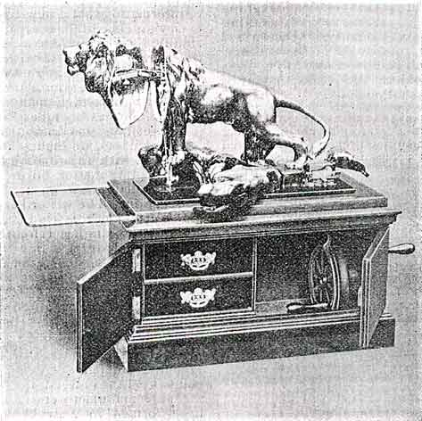
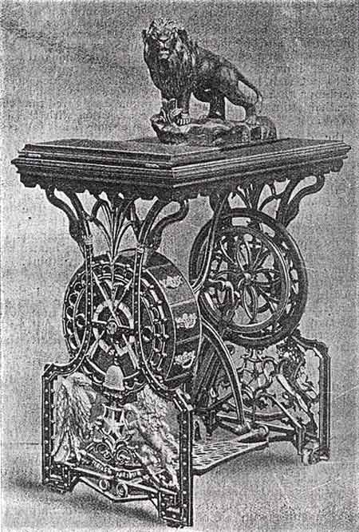
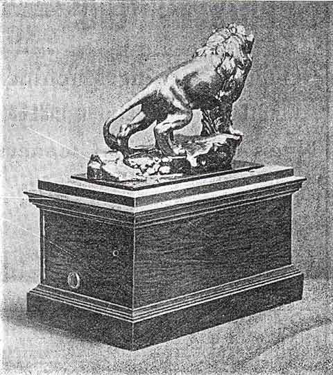

THE BRITISH LION
All information courtesy of Claire Sherwell
Reprinted from: The Journal of Domestic Appliances
December 1902
A Novel Sewing Machine
Messrs. Kimball & Morton Ltd., of Bothwell Circus, Glasgow, have just completed a sewing machine which in design is unique. As will be gathered from our illustrations, the head of the machine is designed to resemble a lion, and within the lion is arranged the mechanism necessary for a practical sewing machine.
We understand that Messrs. Kimball & Morton have been to very great trouble to get their lion true to life, and the design they use is after the celebrated original statue by J. Vasteugh Gyorgy.
The "Lion" machine and the rock on which it stands are cast of fine art metal electro-plated, and finished in a style equal to the best bronze statuettes.
The vibrating shuttle principle is used for the mechanism, and the makers claim that their "Lion" Sewing Machine is in every way equal to the best vibrating shuttle machine on the market.
Referring to our illustration of a hand machine, we might say that to work the machine it is only necessary to swing aside the front portion of the rock, and that the machine can be operated by either of the two handles shown in our drawing. The wire extension shown on the left of the lion is intended to support heavy work.

Our illustration of a treadle machine needs little explanation beyond the statements that the drawers are novel in design, and that the emblems displayed indicate strength, speed, hope, defence, industry, time, grace, dignity and plenty.

We understand that this novelty in sewing mechanism has delighted every woman who has seen it, and if the first few days of its career can be taken as a criterion, the "Lion" will have a long life.
~~~~~~~~~~~~~~~~~~~~~~~~~~~~~~~~~
THE BRITISH LION
ADAPTED BY AN
EMINENT SCULPTOR
FOR A
VIBRATING SHUTTLE
SEWING MACHINE
================
It is a Perfect Work of Art, finished in the best style of the JEWELLER'S BRONZE, and as a Sewing Machine it is up-to-date.
It is made of the best material, and is simplicity itself. A child can work it: the ladies are delighted with it, and it is easy to sell. It yields more profit to the dealers than any other Sewing Machine in the market.
It is the newest and best thing in Sewing Machines - an ornament to every household, from the Queen's Palace to the humblest cottage.
"It is a Thing of Beauty, and a Joy for ever".

Kimball & Morton,
Limited,
11, BOTHWELL CIRCUS,
GLASGOW
~~~~~~~~~~~~~~~~~
Established 1867
CONTRACTORS TO THE ADMIRALTY
Illustrated Price Lists on application
================